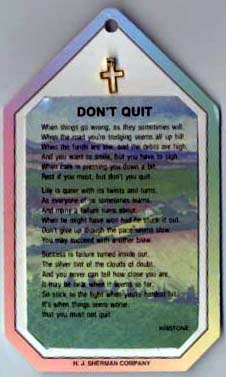
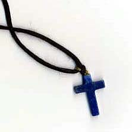
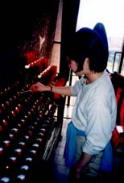

セドナ日記 〜 第４日目 98.5.7
再び教会へII

RED ROCK STATE PERKをあとにし、次は心残りな場所となった、教会のショップとエンジェルとクリスタルのお店に向かうことにした。「土産物屋はもういいだろー」、と言う感じではあるが、セドナでは土産も奥深いことに気付いたのである。天使、クリスタル、これらの品揃えは、半端ではない。しかも、セドナにいるうちに、何となくそれぞれの「もの」の「け」を感じられるかもしれないという気になっていた僕にとっては、見てるだけで楽しいし、時間もかかるのであった。
おごそかな教会に再度訪問。きっと今回はこれが最後になる。なんども来たけど、いつも気持ちのいい場所だった。

礼拝堂ですこし、静寂と厳かさをあじわう。こういう場の雰囲気は宗教とかを越えて、もっと人の本質に近いところで共有できるものだと思った。「響き渡る静寂」。そのなかに浸っていた。とても贅沢なことかもしれない。
教会のショップは礼拝堂の下の階にある。それほど、大きな広さはないが、クロス、天使、カード、教会でイメージするアイテムはすべて揃う。しかも安いかも知れない。というか、「けっこう、そこそこな指輪１つ１ドル」とか掘りだし物的（などといっては冒涜なのでしょうか？でも、そんなことを気にしていては、自意識過剰か？）なものがあって、気取らないけど、ちょっと気にするお土産にはいいとおもう。
「もう、土産は買わん」とおもっていた僕も、「このくらいなら」といくつか追加購入したのだった。お店の方もいい雰囲気で、僕のお気に入りのお店になったが、次に来るのはいつだろうか？